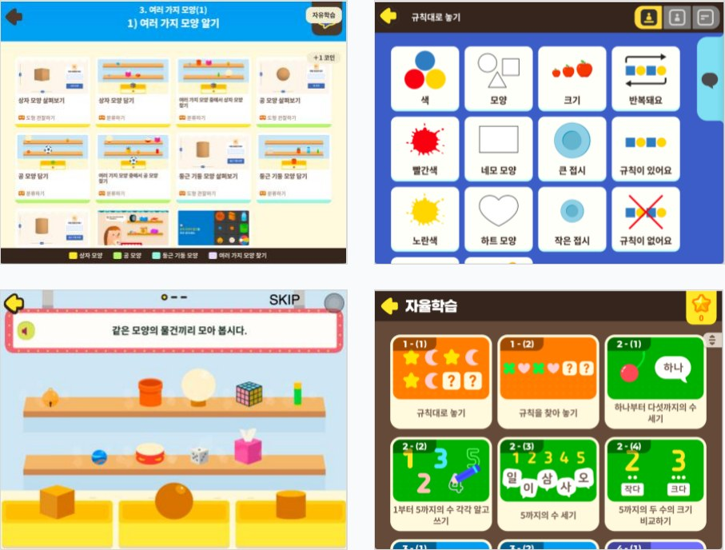
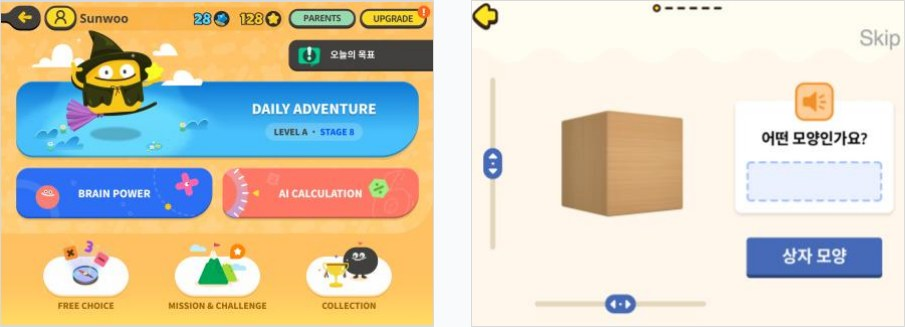

3~4학년 특수교육 AI 디지털교과서 수학 기획 및 개발
25.05~25.12전체 커리큘럼 콘텐츠 개발 완료
토도수학 페이스리프팅 커리큘럼 개편 및 신규 액티비티
25.05~25.10토도수학 페이스리프팅 릴리즈
자세히 보기 · AI로 만든 업무 도구 →PDF 3쪽
쪽 내용 펼치기
3~4학년 특수교육 AI 디지털교과서 수학 기획 및 개발
- 토도수학 액티비티 66종을 특수교육 성취기준과 전수 대조해 재사용·수정·신규 개발 판단
- 대응하는 것이 없는 구간은 액티비티를 새로 만들고, 고칠 수 있는 것은 스테이지 데이터를 수정
- 조건, 발문, 레이아웃, 난도 기준, 음성 안내 시점까지 정의해 개발·디자인 전달
- 표준분류체계 그룹 재구성 및 그룹 간 선후행 연결
- 대단원 14개·소단원 35개·스테이지 326개 커리큘럼 구성 및 380문항 개발
- 성취 수준별 평가 문장(평어)·의사소통판(AAC) 적용 콘텐츠 구성
- 원고 폼과 데이터시트를 연결한 문항 입력 자동화 및 제작·검수 도구 제작

토도수학 페이스리프팅 커리큘럼 개편 및 신규 액티비티
- 기존 커리큘럼을 검토해 비어 있는 구간과 보완할 지점을 찾아 반영
- 특수교육용으로 설계한 신규 액티비티를 토도수학에도 추가
